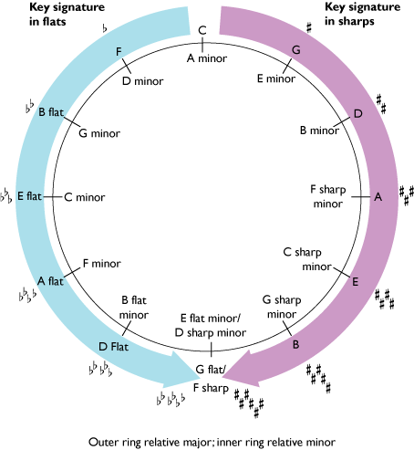

From a starting point of C major (no sharps or flats), the pattern for major scales with sharp key signatures is G, D, A and E, with the key signature for each scale adding an additional sharp to the previous one.
The pattern for major scales with flat key signatures is F, B♭, E♭ and A♭, with the key signature for each scale adding an additional flat to the previous one.
Each successive major scale with a sharp key signature starts on the note a perfect fifth above the previous one, and each successive scale with a flat key signature starts on the note a perfect fifth below the previous one. So G major, with one sharp in its key signature, begins on the note a perfect fifth above C, which has no sharps or flats in its key signature. And D major, with two sharps in its key signature, begins on the note a perfect fifth above G. And so on.
Conversely, F major, with one flat in its key signature, begins on the note a perfect fifth below C, and B♭ major, with two flats in its key signature, begins on the note a perfect fifth below F. And so on.
This sequence of keys, extended to cover a whole series, is better understood as a diagram, the circle of fifths. The major keys sit outside the circle and their corresponding relative minors (which have the same key signature) inside the circle.
The tonic of a relative minor scale can be found by counting down three semitones from the tonic of its major equivalent, for instance, the tonic of C major down to the tonic of A minor. This interval, A–C, consisting of three semitones, we can now name as a minor third.